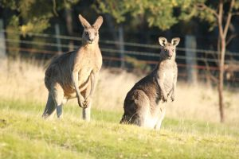

KANGROOS
Kangaroos are large marsupials that are found only in Australia. They are identified by their muscular tails, strong back legs, large feet, short fur and long, pointed ears. Like all marsupials, a sub-type of mammal, females have pouches that contain mammary glands, where their young live until they are old enough to emerge.
- Scientific Name: Macropus rufus.
- Distance/speed: Jumps 15 feet,hops @30 miles/hour.
- Average Lifespan: 8 to 12 Years and 7 feet height.
- Habitat: Forests to woodland areas and eat grasses.
Kangaroos are the planet's largest marsupials, a variety of mammal in which offspring, called joeys, undergo most of their development inside an exterior pouch on the mother's abdomen.Their polpulation varies from 30 to 60 million as per the study and has a family called Macropods consisting of(kangaroos, wallabies, tree-kangaroos, pademelons, quokkas).